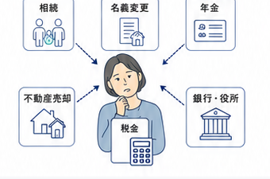
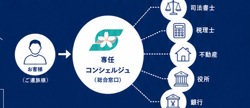

抱え込まず、まずは今のお困りごとをお聞かせください。
086-237-123424時間365日対応
お問い合わせフォーム相続、不動産、役所や銀行への届出——葬儀のあとに必要な手続きを、さくら祭典が最後まで伴走します。


相続の手続き、名義変更、年金の手続き、不動産の売却、税金の相談――ご葬儀のあと、これほど多くの手続きが一度に降りかかることに、驚かれる方も少なくありません。
人が亡くなられたあとの手続きは約100項目にも及ぶといわれ、「年金は役所」「名義変更は司法書士」「税金は税理士」と、その都度別の窓口に連絡し、同じ事情を一から説明する――その負担は、心にも身体にも重くのしかかります。
さくら祭典は、お客様専任の「総合窓口(コンシェルジュ)」として、いま何が必要かを整理し、信頼できる提携専門家(司法書士・税理士など)へシームレスにおつなぎします。



葬儀を通して、すでにご家族の状況やお気持ちを理解しているスタッフが、そのまま手続きの伴走を行います。初めて会う第三者に一から説明し直す必要はありません。

信頼できる提携専門家(司法書士・税理士・不動産の専門家など)と緊密に連携し、ワンストップでサポートします。複雑な手続きも安心してお任せください。
お葬式をどちらで行われた方でも、ご相談いただけます。ご遺族様が抱える複雑な手続きの重圧を取り除くお手伝いをいたします。
今の状況やお困りごとを、専任スタッフが丁寧にお伺いします
必要な手続きを分かりやすく整理し、優先順位をご案内します
信頼できる提携専門家へおつなぎし、最後まで寄り添います
さくら祭典の専任スタッフによる初期相談や、必要となるお手続きのスケジュール整理、専門家(司法書士や税理士など)へのご紹介はすべて無料です。実際に専門家へ実務をご依頼される段階で初めて費用が発生しますが、必ず事前に明確なお見積りをご提示し、ご納得いただいてからの着手となります。まずは何から手を付ければいいかの状況整理だけでも喜んでお手伝いいたしますので、安心してお声がけください。
はい、もちろん大歓迎です。過去に他社様でお葬式をされた方でも、気兼ねなくご相談いただけます。葬儀をした葬儀社ではその後のフォローがなかった、どこに相談していいか分からないと、私共のアフターサポートや法要をご利用される方は多くいらっしゃいます。お葬式の場所に関わらず、ご遺族様が抱える複雑な手続きの重圧を取り除くお手伝いをさせていただきます。
はい、全く問題ございません。相続や名義変更のお手続きは、ご葬儀から数ヶ月〜数年経ってから必要性に気づかれるケースも珍しくありません。ただし、2024年4月からの相続登記の義務化など、放置しておくと不利益を被る可能性がある法改正もございます。期限があるもの・急がないものを私たちが分かりやすく整理いたしますので、遅すぎるかもとご遠慮なさらず、まずは一度ご状況をお聞かせください。
どうぞそのままの状態でご相談ください。人が亡くなられた後の手続きは約100項目にも及び、ご遺族様だけで年金は役所、名義変更は司法書士、税金は税理士と調べながら連絡を取るのは、心身ともに大変なご負担となります。さくら祭典がお客様の総合窓口(コンシェルジュ)となり、現在のご状況をお伺いした上で必要な手続きをリストアップし、信頼できる提携専門家へシームレスにおつなぎします。お客様があちこちに何度も同じ説明をする手間を省き、ワンストップで伴走いたします。